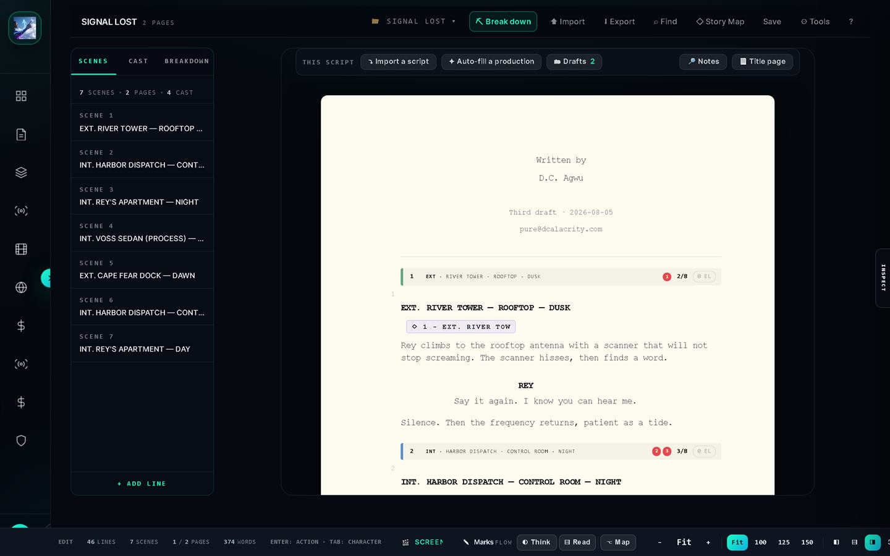
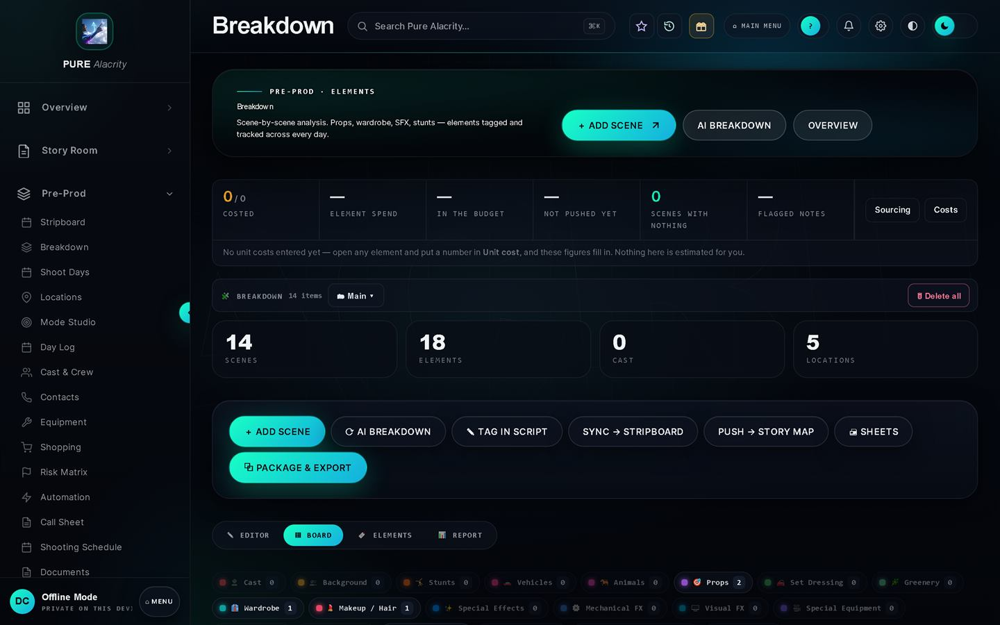
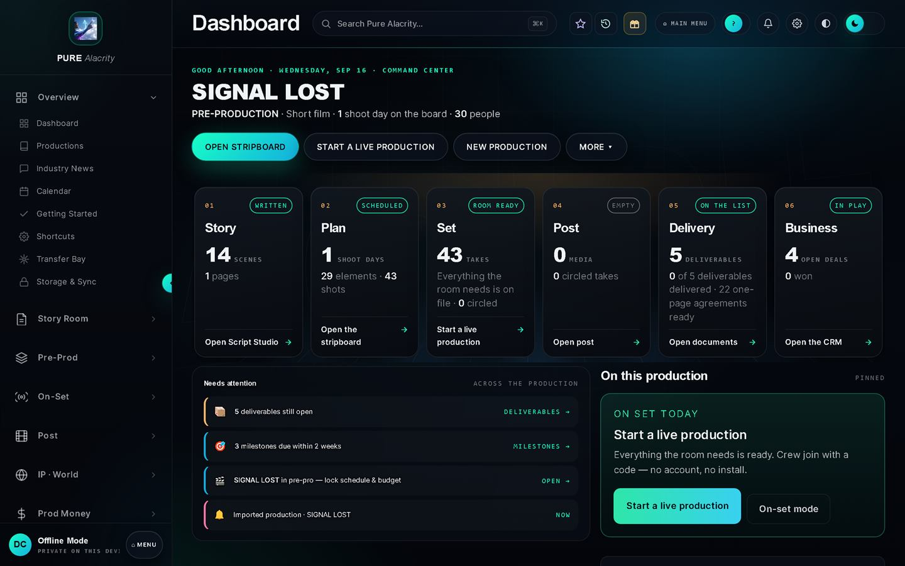

Behind this page is the story graph of Right Here Right Now! — the branching structure of a released interactive film, drawn from the file the Unity runtime actually plays.
D.C Alacrity · North Carolina
Building the Experience Industry.
We are a technology and media company developing original IP, software and interactive experiences. Our first products and productions are the foundation for a broader mission: technologies and businesses that change how people create, work, learn and connect.
- Founded
- North Carolina
- Live
- Pure Alacrity — free to use
- Shipped
- Right Here Right Now! on Meta Horizon
The organising idea
What we mean by the Experience Industry.
Three things have to be true at once for an experience to exist: someone has to make it, something has to deliver it, and other people have to be able to build the next one. We work on all three, and each already has something finished attached to it.
01 · The experience
What a person actually meets.
The thing someone watches, plays or walks into. For us that has meant branching live action on a headset, a crime series, a documentary about a coastline.
What exists
Right Here Right Now! — North Carolina’s first interactive live-action VR film, free on Meta Horizon and SideQuest.
The capability it establishes: we can design a story that branches, shoot it as live action, and finish it as something a person opens on a device they already own.
02 · The delivery
The technology that carries it.
A runtime that turns an authored story into something playable, and a contract strict enough that the two halves cannot drift apart.
What exists
Alacrity Player — a Unity runtime that reads one JSON bundle and plays the graph. Schema 2.0.0, pinned on both sides, round-trip tested.
The capability it establishes: a written branching story compiles into a playable experience. Film is where we applied it first, not the limit of it.
03 · The system
What lets other people do it.
Software that takes a way of working and turns it into something a team can operate — schedules, budgets, breakdowns, the day on set, the handoff to post.
What exists
Pure Alacrity — the production suite, free to use, running real productions since March 2026.
The capability it establishes: a process one person invented becomes a system other people run. That is the difference between a practitioner and a company.
The thread
All three are the same underlying job: take work that only exists in one person’s head, give it a structure, and hand other people the controls. We do it for film because that is the industry we came from and the one whose problems we know in detail. The capability is not specific to film — any field where complicated work has to be coordinated, then delivered as something a person experiences, is the same shape of problem.
Areas of activity
Four places the work happens.
Technology
Pure Alacrity, Alacrity Player and Alacrity Bridge — a production suite, a runtime, and the seam into professional post.
One live · two in buildMedia & experiences
Original properties we own: a crime series, an interactive VR film, a social thriller in pre-production, a coastal documentary.
4 propertiesResearch & development
What we are investigating, what the current experiments establish, and where the capability could go next — kept separate from what already works.
In progressServices
A commercial unit for North Carolina businesses — shoots, edits, colour and social, at published rates.
Booking nowTechnology
The software is the company’s second product line.
Not a tool we built for one film and kept. Pure Alacrity is free, public and running real productions. These are real screens from the current build.
Pure Alacrity
Script, breakdown, schedule, budget, the day on set, post and delivery — with the same numbers in every one of them. Runs in a browser, on Windows, macOS and Android, and offline.
Alacrity Player
A Unity runtime that reads one exported bundle and plays a branching story on a headset, with a flat 2D path for people without one.
Alacrity Bridge
The seam into professional post: the shot plan and the day’s record arriving in Premiere Pro and DaVinci Resolve as a real timeline, through OpenTimelineIO.




The capability
How a story becomes an experience.
A branching script is written, broken down and scheduled like any film — then compiled into something a person can play. Game engines have done half of this for years. None of them know what a call sheet is.
Author01
The story graph
Scenes, choices and endings as a graph you can actually read. Written in Pure Alacrity.
Produce02
Breakdown & schedule
Because in live action a branch is not a line of script. It is a shooting day, with a crew and a budget attached.
Compile03
One bundle
A single JSON file carrying the graph and the clips. Schema 2.0.0, pinned on both sides and tested by round trip.
Run04
Alacrity Player
A Unity runtime reads the bundle and plays it. No hand-wiring between what was written and what runs.
Deliver05
Wherever people are
Headset, a flat 2D path, the web. The same graph, different output — which is why the format stalling is not the bet.
This path shipped
It produced Right Here Right Now!, and it is the path Prize Pool is being built on.
Media & experiences
Properties we own.
Original work, not client work. Each one earns on its own surface and de-risks the next thing — and each is an application of the capabilities above.
 Series · in post
Series · in postFlagship series · crime dramedy
$IDEQU3ST
A broke grocery clerk reunites his crew to chase fortune on a dark-web gig marketplace built by a dead god. Season 1 Part 1 shot with 84 cast and crew; October 2026 release aim.
Enter the world Live on Meta Horizon
Live on Meta HorizonInteractive VR film · released
Right Here Right Now!
North Carolina’s first interactive live-action VR film. Free on Meta Horizon and SideQuest — and the proof that the compile path works end to end.
Format · pipeline · play Placeholder art · in development
Placeholder art · in developmentInteractive VR · principal Fall 2026
Prize Pool
The campus assassin pot hits $1,000,000. Alliance, romance and suspicion move as meters, not menus. The next title on the same stack.
See the design Documentary · in production
Documentary · in productionDocumentary · Cape Fear
Welcome to Wilmy
Surf and beach culture on the Cape Fear coast, under a City of Wilmington permit — and a working relationship with the businesses in frame.
Film · flywheel · hireExpansion
Why the first products support a broader future.
A narrow starting market and a broad company are not in conflict. These are the five capabilities we are actually building, stated as what they are good for rather than what they were first used on.
Creating original intellectual property
We own what we make. A property earns on its own surface, and it is also the test case that proves the technology under it.
Software that coordinates complicated work
A film set is a hard coordination problem with a fixed deadline and no second attempt. Software that survives one is not fragile anywhere else.
Connecting creative tools to delivery systems
Story map into Unity. Shot plan into Premiere Pro and DaVinci Resolve through OpenTimelineIO. The seams between systems are where work is normally lost, and they are the part we build deliberately.
Building interactive experiences
Branching live action that reaches a store, not a prototype that screens once. Choice, state and consequence, authored by people who are not engineers.
Making the work repeatable without us
Every process here started inside one person’s head and ended as something a team can operate. That is the move from individual ability to an organisation, and it is the one that decides whether a company can grow.
Where to go next
Watch, use, hire or partner.
Watch
The work
Four original properties, and what state each is really in.
Use
Pure Alacrity
Free, no account needed. Open it and put a production in it.
Hire
The commercial unit
Shoots, edits, colour and social at published rates.
Partner
Build with us
Production partners, investors, and anyone with a coordination problem this shape.
Tell us what you’re building.
Clients, partners, press, crew, Pure Alacrity questions — one form, routed by topic. It reaches pure@dcalacrity.com.